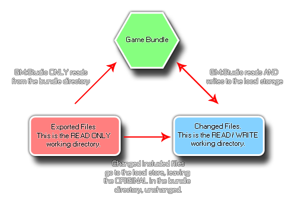

Tutorial
Page 2 of 11
The File System
Before we start into the programming of our saving and loading system, it is a good idea to go over the the basics of how GameMaker:Studio works with external files and what things are going
on behind the scenes. To that end, this page is for explaining and clarifying exactly how things are stored, where they are stored and what possible limits or work-arounds there may be to this
system when you come to use it yourself.
Sandboxing
The first (and most important) thing to note about the file functions is that they are limited (in general) to the sandbox. What this means is that GameMaker:Studio cannot save or load files from
anywhere that is not part of the game bundle or the local storage for the device without explicit input from the user, and even then this input is limited to only Windows and Mac target platforms.
To understand the sandbox first of all you need to understand that there are two distinct areas for files:
- The File Bundle - this is where all the files that are packaged with the executable game are stored, including the files that you have added to the Included Files resource list from the
GameMaker:Studio IDE (which are the external files that you want packaged with the game).
- The Save Area - this is an area of device storage that can be safely written to by the game and the game is guaranteed that this is a writable area.
The following diagram may help you to visualise this better:

NOTE : You can never write to the File Bundle directory.
Using the File Functions
The two target areas (Bundle directory and the local storage area) are available on each target platform, but on each one they work slightly differently. However GameMaker:Studio has abstracted out the
main essence of what can and can't be done, making it easier to re-target games to multiple environments.
To start with, you should understand what is meant when we talk of the working_directory. This is a synonym for the two possible save locations (as illustrated by the
diagram above) and when you use that directory it will do one of two things depending on whether you are reading or writing, and whether the file you are reading from has been changed or not:
- Reading Operations - working_directory will first check the save area to see if the file being accessed is there, and if it is is uses that. However if the file does not exists in the save
area, it then checks the file bundle area and uses that (if the file being looked for is an included file with your game).
- Writing Operations - This can only happen in the save area.
Using these two simple rules we can now see how the following functions work (these are examples to help you to visualise the process for the different functions available):
- directory_create (and the other directory functions) will only work in the save area.
- the file system functions will return information on files from both the bundle and the save area, but will only write to the save area.
- the functions for writing text, binary or ini files will create a new file in the save area if one does not already exist, copying over any information from the original files included with the
game bundle should they exist.
Platform Specific Saving/Loading
When working with GameMaker:Studio, you should also be aware that teach target platform has its own save area where files and directories can be written to and read from. Below is a list of those areas
for each target:
- Windows - Windows has all files in the %localappdata%\<Game Name> directory (on Windows 7 this is the /Users/<User Name>/AppData/Local/<Game Name>
directory).
- Mac OS - Storage will depend on whether the application is sandboxed or not (following Apples rules).
- HTML5 / Windows 8 (JS) - Everything is done through the local storage.
- iOS - Storage is the standard location (as viewed through iTunes).
- Android - Files are in the standard location (which is invisible unless the device is rooted) /data/data/<package name>.
- Windows Phone - Files are in the same location as the app.
While on some platforms you can use the file name on its own to access included files, it is worth noting that on devices (Android, iOS, Windows Phone) you must use the prefix of the
working_directory to access stored files as using just the relative path will not work. It is also worth noting that the HTML5 and Windows 8 target modules have a limit on local storage (which can be
between 1MB and 5MB depending on the browser) meaning that you will not be permitted to save large sprites, screenshots etc....
Now that we have the theory out of the way, let's continue on to the practice!
Click on the Next button to go to the next page of the tutorial.